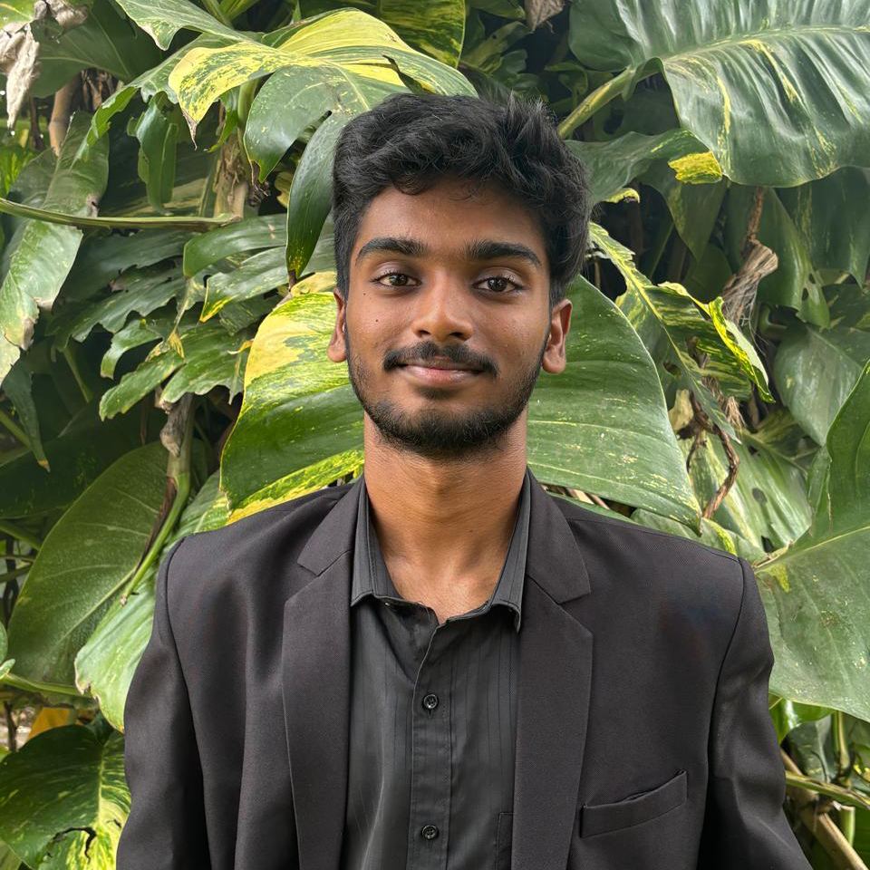
Secretary-General
Ajay Jagath S K
Ajay Jagath, a Grade 12 student at Yuvabharathi, aspires to become an entrepreneur with purpose, someone who does not just build businesses, but creates meaningful change and impacts lives in ways that have never been imagined before. Ajay started MUNning in grade 9 and firmly believes that MUNs are not about awards, but about the knowledge and exposure one gains during the journey. He has been a key member of the YBMUN Design and Editing team since YBMUN III and served as the Under-Secretary-General for IT in YBMUN V. He served as the Prefect of the school (2025-26), and what sets him apart is his commitment to excellence, perseverance, and consistency in all his efforts.
In the field of STEM, he excels in coding and thrives on immediate problem-solving during Hackathons. He has received awards in notable STEM competitions. Additionally, he led an innovative development team that successfully created software for conducting the Student Council Election 2026 digitally. He also dedicates time to content creation, designing and video editing. He enthusiastically took on the role of Editor for the school newsletter, YB Mosaic - Vol. 4. He also participates in 10K and 5K marathons and in his free time, he enjoys playing piano and composing music.
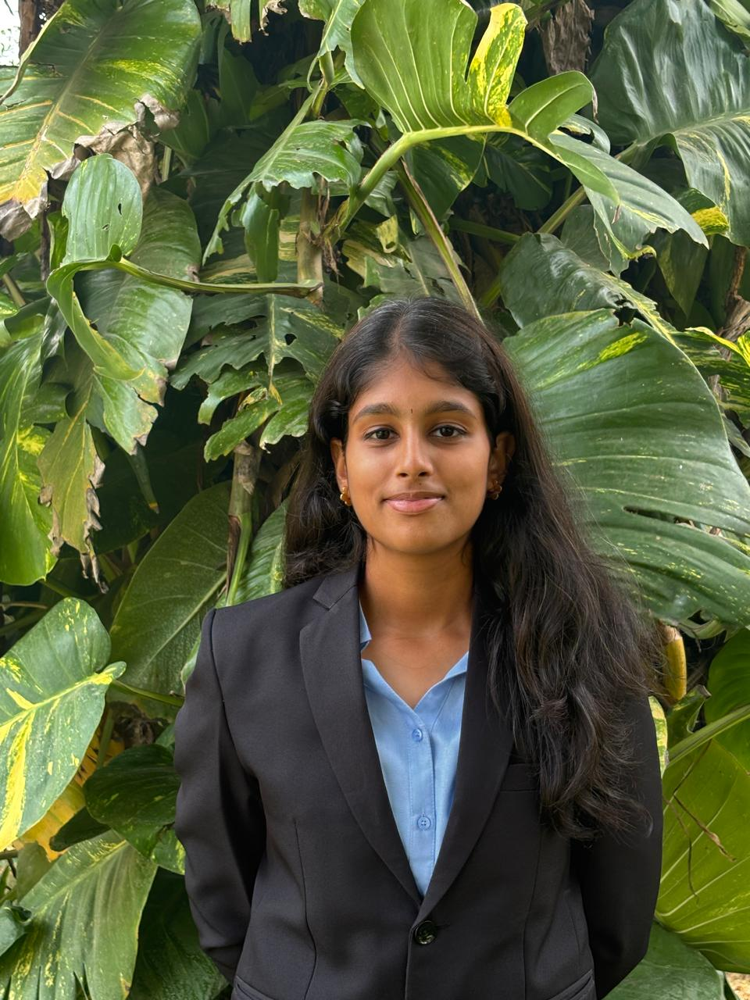
Secretary-General
Mythili R K
Mythili, a Grade 12 student at Yuvabharathi, aspires to pursue management at the Indian Institute of Management (IIM) and build a career that combines leadership, innovation, and creativity. Her interest in Model United Nations began in the 7th grade, and to her, MUNs mean a great deal: the satisfaction of contributing meaningfully to discussions, defending her stance with reason, and working towards solutions through decorum and collaboration. From negotiating resolutions in committee rooms to organising events, she enjoys experiences that challenge her to think critically and work collaboratively. She bagged several Special Mentions and High Commendation in MUNs across international and national committees. Her leadership skills, rooted in accountability and hospitality, earned her the positions of Under-Secretary-General of Hospitality and Logistics in YBMUN IV, as well as Director-General and Vice Chair of ECOSOC in YBMUN V.
Beyond her interest in debate and diplomacy, Mythili pursues Carnatic music and archery - two disciplines that continue to shape her focus and perseverance. She excelled in the CBSE South Zone and National Archery in 2025. She has other diverse interests, including editing, designing, and running her own business. She firmly believes that MUNs have had, and will continue to have, a lasting impact on the way she thinks, communicates, and acts.
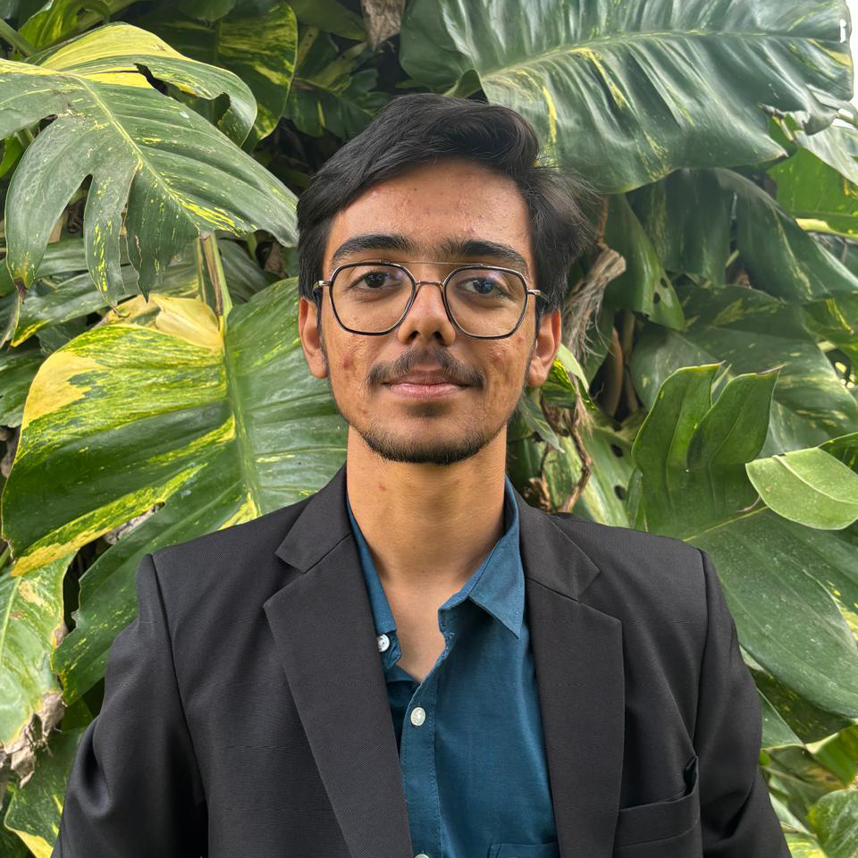
Director-General of Conference and Events
Vaibhav R
Vaibhav, a Grade 12 student at Yuvabharathi, wishes to pursue a career that combines science, technology, and problem-solving, enabling him to develop practical solutions to real-world challenges. Public speaking is one of his greatest passions. A speaker in the TED-Ed Student Talks 2025, he believes public speaking helps him share his experiences with the world through a completely new lens. Kicking off his MUN journey in Grade 9 with a first-timer award, he completed 9 MUNs, with Best Delegate awards and various Special Mentions. MUNs have brought out a completely different part of him that made him feel more confident. He also served as the Director-General of YBMUN V and the Vice-Chair of UNEP, demonstrating his ability to multitask under any circumstance.
Vaibhav represented the school as an ambassador in various social immersion programmes. Another art that has continued to help him build patience and discipline is music. Beyond this, he also enjoys reading, callisthenics, tennis, and learning about breakthroughs in technology.
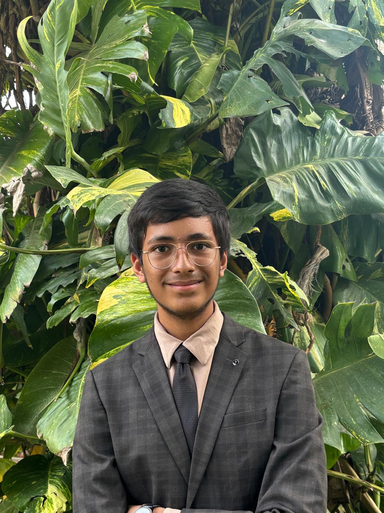
Director-General of Operations
Gaurav Agarwal
Gaurav Agarwal, a Grade 11 student at Yuvabharathi, set his goal in life to become "the person who had changed the course of history forever and left millions inspired". A Centum scorer in Social Science in Grade 10, for him, a successful school life isn't just about getting top grades; it's about finding a balance between academics, sports, and extracurriculars. This mindset drew him toward competitive quizzing and Model UN. He started his MUN journey in grade 7 and finally discovered his forte. He believes that MUNs empowered him to think on his feet, look at global issues from different perspectives, and negotiate with others. Over the years, he won 6 Best Delegate awards and numerous High Commendations and Special Mentions. He also served as the Under-Secretary-General (USG) of Delegate Affairs for YBMUN V.
Gaurav has won accolades in Olympiads and quizzes at National and State levels. He spends his free time reading non-fiction, exploring philosophy and economics, and watching quality and cult classic cinema.
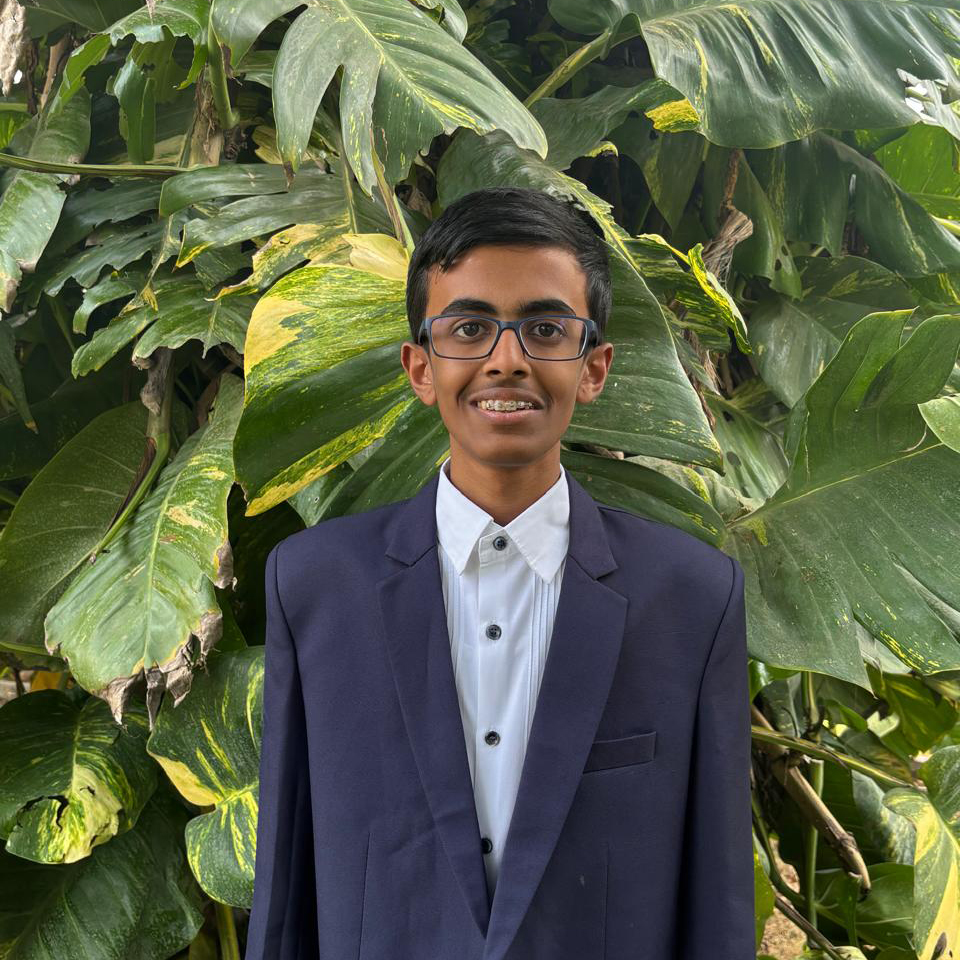
Director-General of Committees & Delegate Training
Sai Nithin V
Sai Nithin, a Grade 11 student at Yuvabharathi, aspires to serve society and become an entrepreneur. He believes in the quote by Mahatma Gandhi, "Be the change that you wish to see in the world". He wishes to initiate the change that he aspires to see in society. He started MUNning in his 7th grade, and ever since winning the 'Best First Timer' award, he has bagged 8 Best Delegate awards, many High Commendations, and Special Mentions at the National, State and District levels. MUNs have always intrigued him, as they empowered him to hone multiple skills, such as public speaking, debating, creative thinking, resolution writing, analysis, and diplomacy.
A School Topper in Grade 10, he has won accolades in Olympiads, inter-school debating competitions and a national-level science fair. He secured many medals of honour for participating in the Social Immersion Programmes and has also published a book. He believes that listening to music instils inspiration and relaxation in him and loves to lead life without regrets.
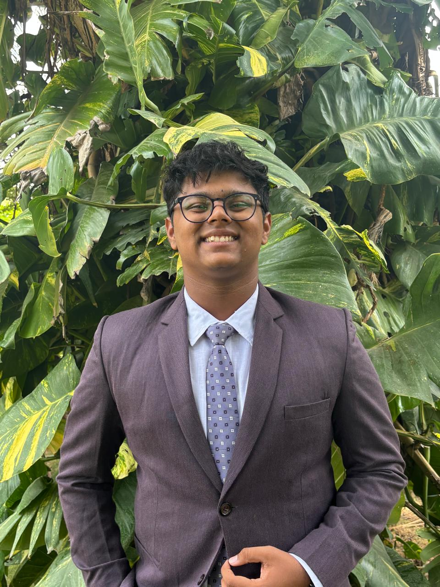
Under-Secretary-General of Delegate Affairs
Moksh V Bhandari
Moksh V Bhandari, a Grade 12 student at Yuvabharathi, aspires to earn the CFA and FRM designations and build a career at the intersection of economics, private equity, and the corporate world. He believes in giving back to society in meaningful ways, as a small measure of gratitude for everything it has given him. His MUN journey began four years ago on the encouragement of a few facilitators. Since the time he won the "Best First Timer" award, his passion has grown stronger with every conference. Over the years, he has received every major individual accolade a conference has to offer, including "Best Delegate" and "High Commendation" awards. To him, MUN has been more than a competition; it has been a classroom that has taught him confidence, discipline, adaptability, and the value of thinking on his feet. He also served as the Under-Secretary-General (USG) of Delegate Training for YBMUN V.
Besides MUNning, he enthusiastically participated in and won various inter-school and district-level business quizzes. He served as the event head of the business quiz event at the Futurpreneurs Fest 2025. He represented the school in the Table Tennis Competitions and has podium finishes. When he is not drafting resolutions, you'll probably find him following Formula One, writing, or wandering around with a camera in search of the perfect nature photograph. Beyond boardrooms, he is a hardcore cinephile who hopes to explore the world to experience unfamiliar cultures, embrace new perspectives, and collect stories one city at a time.
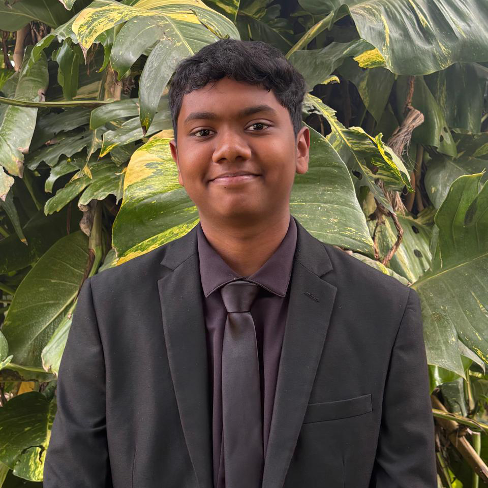
Under-Secretary-General of Delegate Training
Kathir M
Kathir M, a Grade 10 student at Yuvabharathi, aims to become a neurosurgeon, combining a degree in medicine with advanced clinical research in neuroscience. He is passionate about solving mathematical problems and crafting technological masterpieces, all while skilfully adopting the perspective of a diplomat to engage in global affairs. He began participating in MUNs in Grade 8, and since then he has never stopped learning, as MUNs have allowed him to work together and address real global issues, earning him High Commendations and Best Delegate awards along the way. Rather than loud and aggressive debates, he is sure that the best way to influence the world is by calm discussion.
A STEM enthusiast, Kathir has won several Gold medals in Math, Science, and English Olympiads. He also bagged awards in Innovation Competitions like I3R2 (Innovate for Rural India), Amrita Anokha, CSTF 2.0 and the like, in addition to the Zonal Excellence Award at KAMP Nasta and prizes in quiz competitions. The things that amaze him are the logic of mathematics and the complex secrets of the human brain. Being a proactive inventor, he is ever ready to combine the power of software with electronics in order to make his ideas come true.
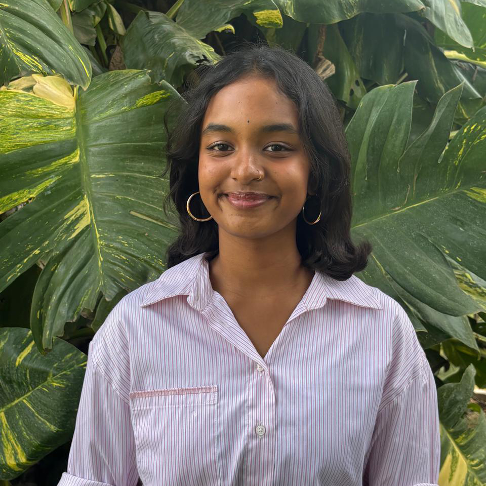
Under-Secretary-General of Hospitality
Sowndarya S
Sowndarya S, a Grade 11 student at Yuvabharathi, has set the goal in life to one day sign in green ink. A bold and uncompromising mindset drives this current Girl Prefect of the School, as she wants to use her voice to challenge the status quo and inspire others towards meaningful change. She started MUNning in 7th grade and has won many Best Delegate awards over the years. Personally, she loves UNHRC and WHO committees because they deal directly with the human element where global policy hits closest to real life, rights and survival.
Sowndarya is a recipient of multiple gold medals for excellence in English Olympiads and has received a Distinction award in communication skills from Trinity College London. She is also a gold medallist in the CBSE South Zone Archery competition 2025-26, and she excelled in the CBSE Nationals Archery Tournament as well. In addition to her achievements in academics and sports, Sowndarya is a trained Bharatanatyam dancer and has served twice as a Distinguished Student Ambassador for India Poverty Solutions. Her versatility is a hallmark of her character. She is a passionate film enthusiast, a devoted follower of the IPL, and has a deep appreciation for music.
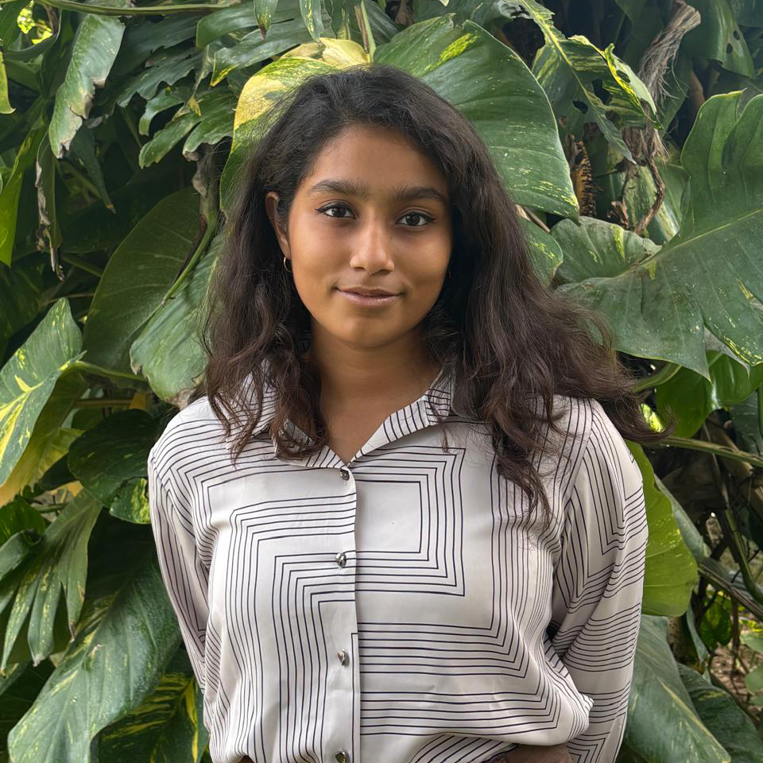
Under-Secretary-General of Public Relations
Mahi Kishore Sethia
Mahi Kishore Sethia, a Grade 12 student at Yuvabharathi, aims to become an investment banker while pursuing a degree in public relations. A passionate basketball player and avid MUN enthusiast, she thrives on debate, strategy, and teamwork. Her journey as a MUNner began in Grade 8, and at Model United Nations, she connects with a part of herself that wants to stand up for what she believes in. Over the course of 9 MUNs, she won Special Mention and High Commendations. She is an amicable and dedicated Head Delegate who holds deep respect for the MUN process. Being a team player, she was instrumental in helping the school win Best Delegation trophies in the last 2 years. She has bagged several medals in swimming and basketball and captained the team in the KSSC Basketball Championship.
Furthermore, she has actively taken part in numerous community service projects. An eternal bookworm lost in fictional worlds, she plays the keyboard and unwinds with music. Adventure calls to her through trekking trails and snowy ski slopes, and she is always ready to try something new.
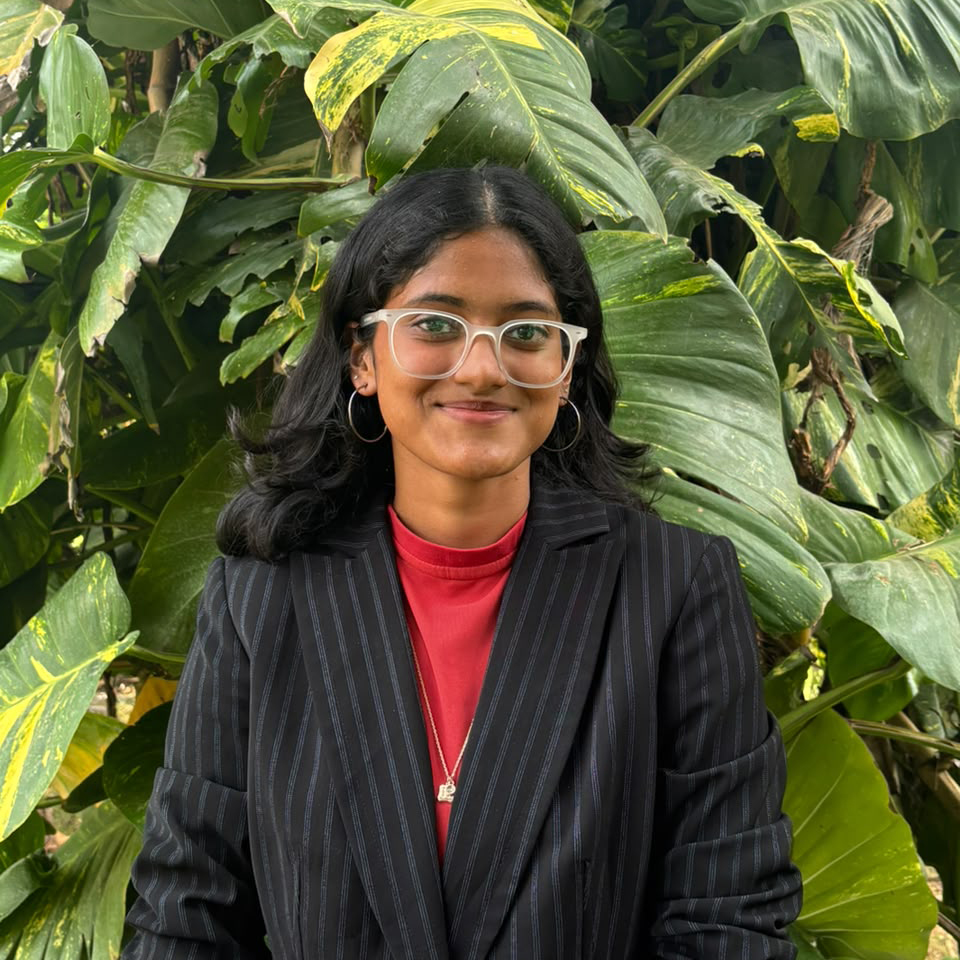
Under-Secretary-General of the Organising Committee
Deeya Barik
Deeya Barik, a Grade 12 student at Yuvabharathi, aspires to become an entrepreneur and has a keen interest in marketing, management, and event organisation. Her interest in Model United Nations began in the 8th grade when she joined the MUN Club. For her, Model United Nations has always been about growth. Every conference has pushed her to become a better communicator, a more confident leader, and a more open-minded individual. She was a part of the Organising Committee in YBMUN III and YBMUN V. Having experienced MUN from different perspectives, she believes that a successful conference is built not only on powerful debates but also on meticulous planning, teamwork, and the people who make it all possible. She proudly served as the Girl School Prefect during 2025-26.
Besides MUNning, she was a part of the team that finished as the runner-up in the CBSE South Zone Football Tournament 2025-26 and won several KSSC tournaments in badminton and football. She secured first prize in the interschool business-based competitions. As someone who enjoys organising, solving problems, and working with people, MUN has become the perfect platform to combine all her interests. She enjoys travelling, creating art, playing badminton, and connecting with people through meaningful conversations.
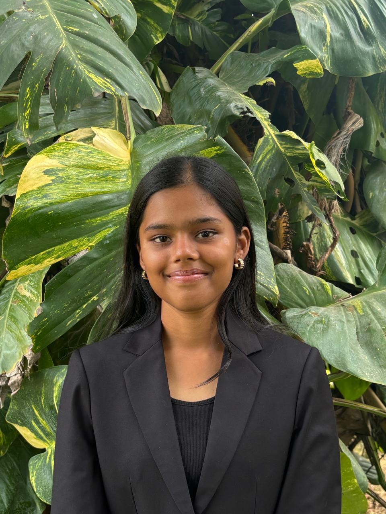
Under-Secretary-General of the Organising Committee
Vriddhi Jain
Vriddhi Jain, a Grade 11 student at Yuvabharathi, aspires to pursue a career in corporate law. Her goal is to grow into a role that not only fulfils her personally but also allows her to contribute meaningfully to society. She participated in MUN in 9th grade, and her interest in MUN has been growing steadily; she strongly believes that MUN provides a platform to improve her public speaking, communication, and social skills. Her interest in MUN reflects her desire to develop a bolder presence and enhance her communication skills.
Besides MUN, she has an unwavering interest in football. She was a member of the school football team that finished as runners-up in CBSE South Zone (Clusters) 2025-26 and the KSSC Football 2025-26. She also secured several medals in athletics (intramurals). A trained Bharatanatyam dancer, she enjoys calligraphy, playing the violin, reading books, and exploring different forms of art because each of them reflects a different part of who she is. She also likes watching movies and crocheting. She believes that these interests shape the way she learns, creates, and sees the world.
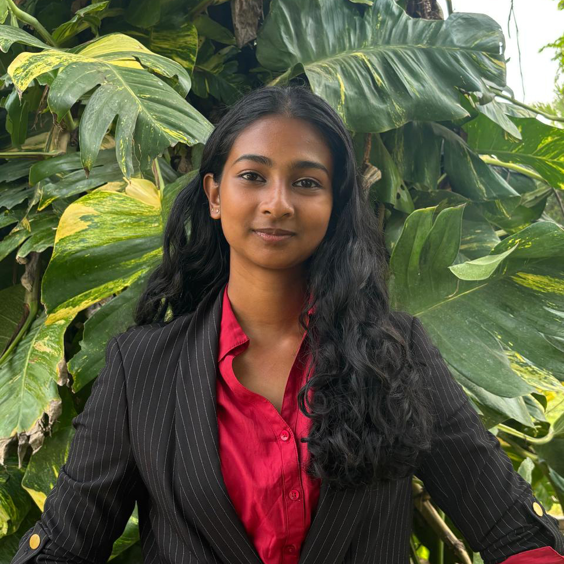
Under-Secretary-General of IT & Photography
Haashini Priya C P
Haashini Priya, a Grade 12 student at Yuvabharathi, aims to major in Marketing and work in the fields of Social Media, Public Relations, Advertising, and Marketing (SPAM), where she aims to create impactful campaigns and meaningful brands. She dreams of launching her own brand and working in New York City. For her, Model United Nations has been a transformative platform since grade 7 that has helped her refine her public speaking skills, develop confidence, and express her thoughts effectively. One of the aspects she values about MUN is the opportunity to interact with people from diverse backgrounds, exchange ideas, and gain new perspectives on global issues. She has been part of the core team of YBMUN for four consecutive years. She served as the Under-Secretary-General (USG) in YBMUN V, where she developed leadership, event management, and teamwork skills.
Haashini has a keen interest in football; she served as the Captain of the School Football Team, which emerged as winners in the KSSC Football Tournament 2025-26 and was a member of the runners-up team in the CBSE South Zone Football Tournament. Beyond sports, she is passionate about fashion, branding, and content creation, with a particular interest in building creative identities and telling stories through design. A speaker at the TED-Ed Student Talk, she also enjoys journaling, painting, photography, and visual storytelling, capturing meaningful moments.
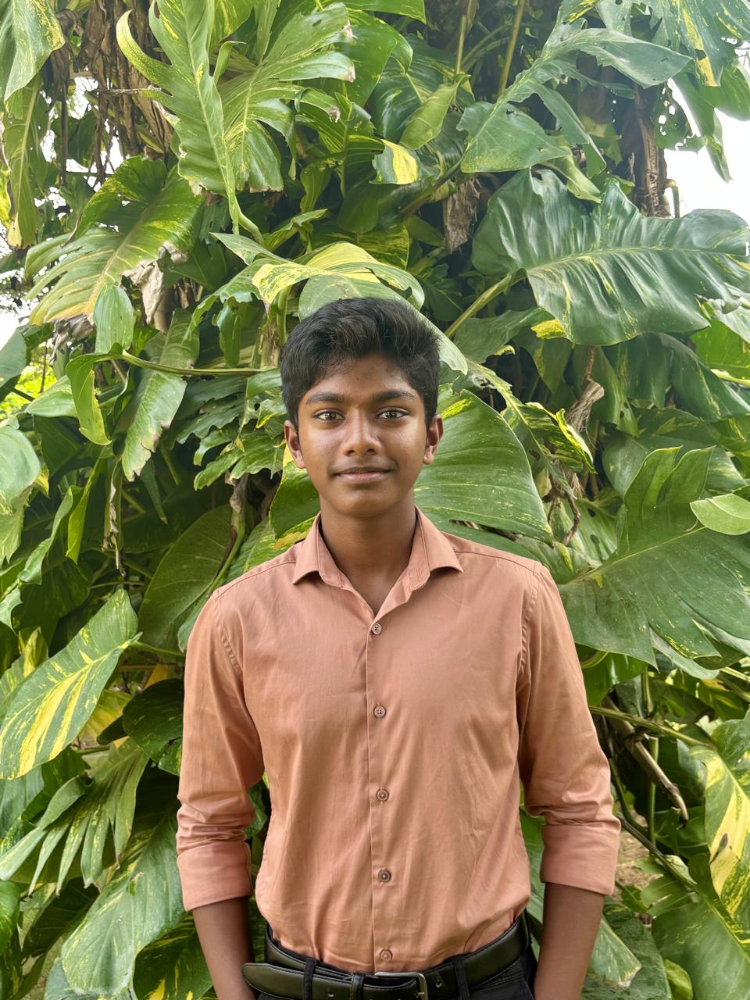
Under-Secretary-General of IT & Photography
Mithran Shvram S
Mithran Shvram, a Grade 10 student at Yuvabharathi, aims to study law, appear for the Civil Services Examination, and serve as a District Collector. He believes that becoming a Collector will empower him to work closely with people and implement meaningful development programmes.
A prodigy behind the lens, Mithran started his photography journey at the age of five. He is also a district-level award-winning wildlife photographer. Mithran began his MUN journey in Grade 7 and describes it as one of the most exciting and enriching experiences of his school life. He has served as an IP (International Press) delegate five times, expressing his passion for photography with journalism. He has won three Best Delegate awards in Photography. On the sports field, he has represented the school cricket team since Grade 6 and was awarded Best Bowler of the Tournament at the KSSC Cricket Tournament 2024. He proudly identifies himself as an NCC Cadet who cleared the A certificate exam. Mithran also enjoys volleyball and basketball and has recently developed an interest in callisthenics.
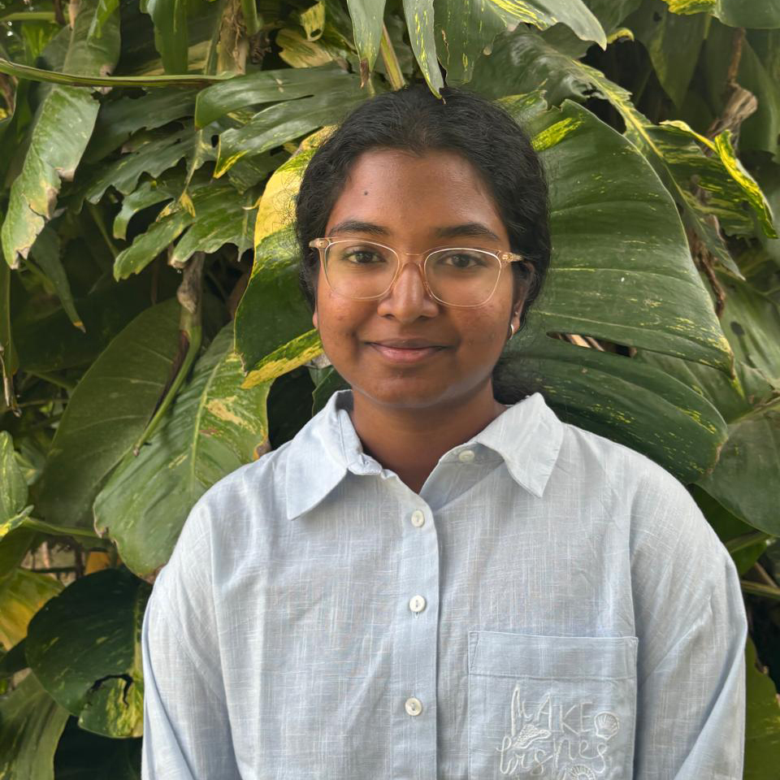
Under-Secretary-General of Social Media & Design
Sree Vidhya Lakshmanan
Sree Vidhya, a Grade 11 student at Yuvabharathi, aims to carve her career path in game design and architecture. She welcomes creative projects that challenge her analytical thinking and problem-solving skills. To her, MUNs are about collaborating creatively on world issues to make a change for the better, together, so that no one is left behind. She was first introduced to MUNning in Grade 8 when she joined the MUN club. Since then, she has participated in various committees and served on the core team for YBMUN III and as the Under-Secretary-General of IT in YBMUN IV. MUNs, she believes, have helped her evolve socially: from the introvert she once was to the confident person she is today. She highly recommends MUNs as a great way to build connections and rapport.
Beyond MUNs, Sree Vidhya is a voracious reader with a keen interest in design. In the International Benchmark Tests 2023-24, she was awarded a Certificate of Honour - given to the top students in the country - in Reasoning. In her free time, she enjoys listening to music, reading, gaming, art, and watching TV.
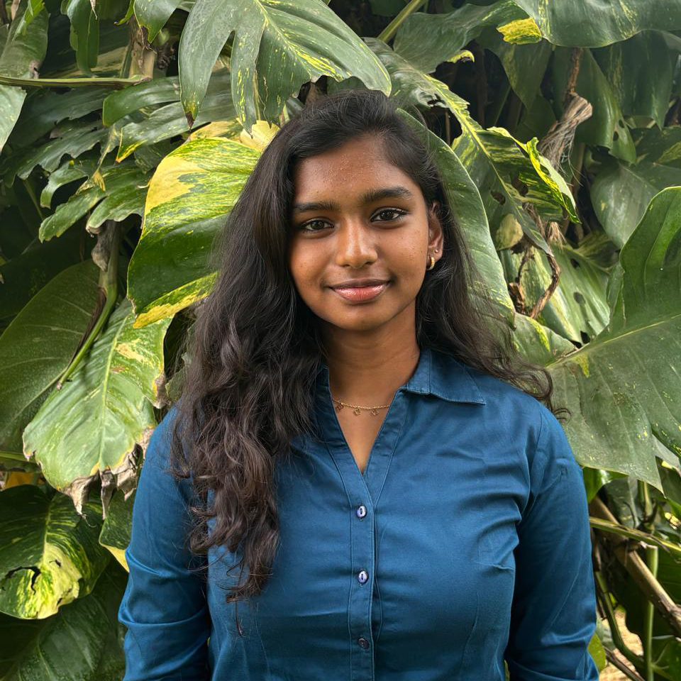
Under-Secretary-General of Social Media & Design
P Prarthana
Prarthana, a Grade 12 student at Yuvabharathi, aspires to work in the design field, inventing and innovating new products through the blend of technology and creativity. She expresses herself through multiple art forms such as art, dance, speeches, and poetry and is always seeking new perspectives on the world around her. Her journey as a MUNner began in Grade 11. For her, Model United Nations has been a wonderful platform to build confidence, sharpen observation, and create impact through words, as she believes "literature strikes stronger than a sword." Through researching countries' goals, MUNs also taught her the importance of global affairs, diplomacy, and teamwork. She believes that listening to diverse research and opinions is what brings harmony to debate.
Prarthana is an award-winning delegate, having won Honourable Mention, High Commendation, and Best Delegate awards. Beyond MUNs, she has participated in several hackathons and was placed in the Top 20 at a national-level hackathon. A trained classical dancer and an aspiring writer, her response was selected and published in the Times of India NIE. In her free time, she finds comfort in fantasy books, music, swimming, and debates.